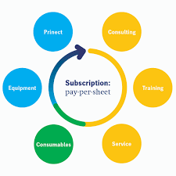
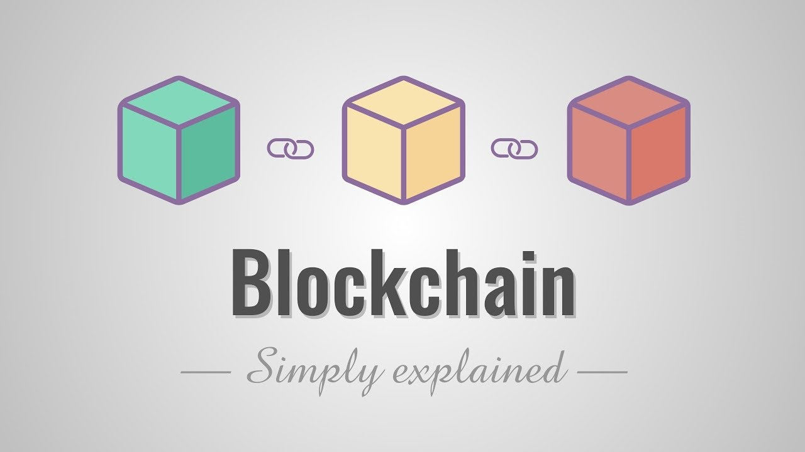

Information technology (IT) is the use of computers to store, retrieve, transmit, and manipulate data, or information, often in the context of a business or other enterprise. IT is considered to be a subset of information and communications technology (ICT). The term is commonly used as a synonym for computers and computer networks, but it also encompasses other information distribution technologies such as television and telephones. Several products or services within an economy are associated with information technology.
tech trends

Subscription Model
The days of "pay-per-use" costing are long gone, and are likely not coming back anytime soon, as most companies are switching to recurring revenue models. Already, you can order your clothing, groceries and cleaning supplies to be delivered directly to your doorstep on a weekly or monthly basis. The subscription business model is a business model where a customer must pay a subscription price to have access to a product or service. The model was pioneered by magazines and newspapers, but is now used by many businesses and websites.
Augmented Reality
E-commerce
E-commerce is the activity of buying or selling of products on online services or over the Internet.In a report on online retail, Forrester stated that 83 percent of U.S. adults purchased something on Amazon this past year. As this number grows, and digital storefronts become a more convenient and attractive option for consumers, we can expect to see ecommerce begin to take bigger slices of the retail pie.
Automation
Automation is the technology by which a process or procedure is performed without human assistance.Artificial intelligence and machines will soon become ubiquitous in the professional world. From virtual assistants, to manual labor,to intermediary services, many jobs will likely be disrupted in the coming years. Though humans are indispensable in certain fields, there are many points of optimization that we can fully automate with embedded technology.
Virual Reality
While the technology is still evolving, and while players like Oculus and HTC continue to iterate on their consoles, things look promising for the industry as VR platforms begin to appeal to the masses.
Virtual reality (VR) is an interactive computer-generated experience taking place within a simulated environment, that incorporates auditory.

Block Chain
Blockchain technology is a way of securely managing access and information.
The core of blockchain hinges on the idea of decentralization, which essentially distributes power and risk equitably across players in a network. Blockchain startups are finding niche and clever ways to optimize industries.
Internet Of Things
The Internet of Things (IoT) is the network of physical devices, vehicles, home appliances and other items embedded with electronics, software, sensors, actuators, and connectivity which enables these things to connect and exchange data, creating opportunities for more direct integration of the physical world into computer-based systems.